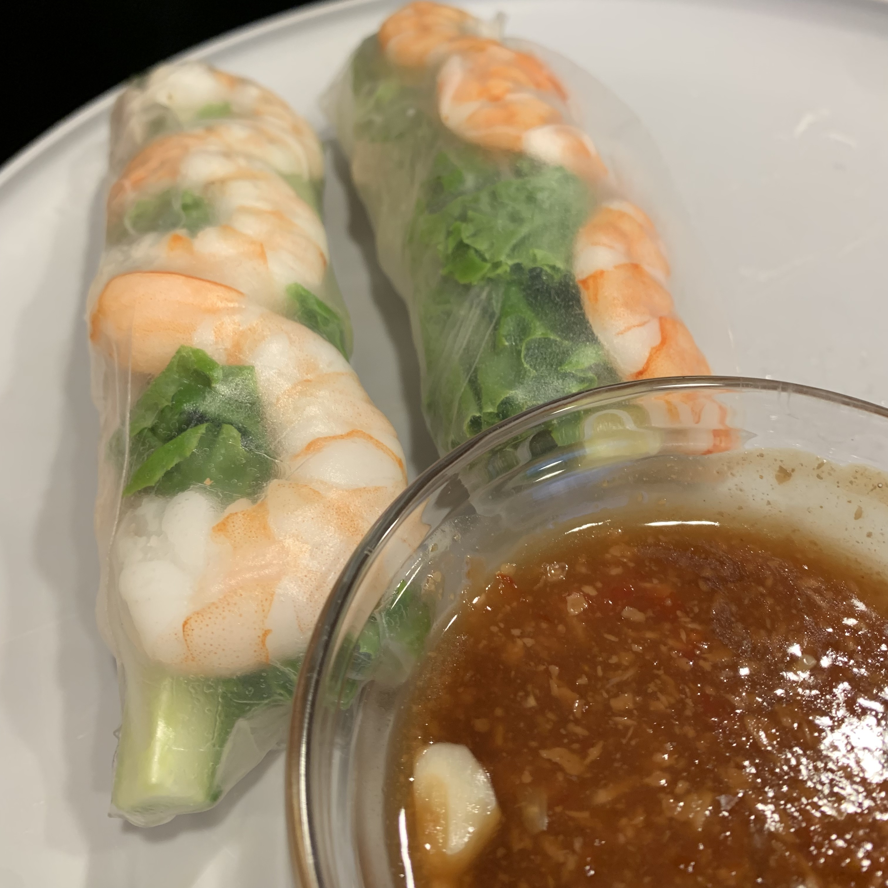

spring rolls & peanut sauce
serves: as many people as u want :)
meg's rating: 10/10
i was about to eat the peanut sauce from the pot. literally the best thing i've ever had.

ingredients:
spring roll:
- spring roll wrappers
- vermicelli rice noodles
- shrimp
- lettuce
- pork (loin, shoulder or belly)
- other fillings
peanut sauce:
- hoisin sauce
- water
- peanut butter, chunky
- cornstartch
- garlic, minced & 3-4 cloves
directions!
- boil water and cook pork for ~20 mins
- boil water and cook shrimp until they turn color
- immediately put into cold/ice water so they do not shrink
- boil even more water, and cook the vermicelli noodles until soft ~3 mins but just eyeball it
- for the peanut sauce put 3 heaping spoonfuls of hoisin, 12 spoons of water, and some cornstarch into a pot and simmer. add the peanut butter and garlic and continue to mix and sit on medium-low heat. cook to taste.
enjoy!